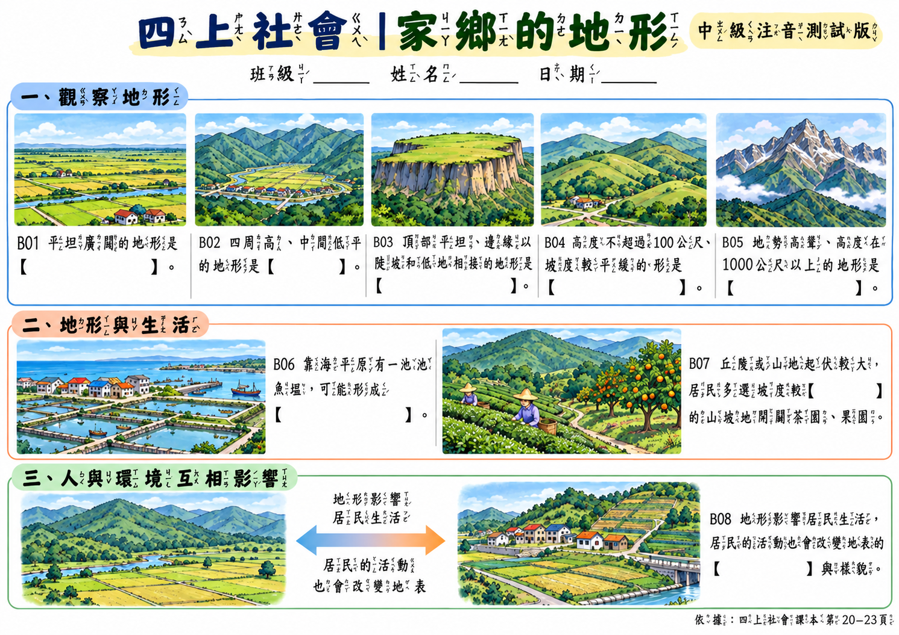

YOUR TEACHING DESK
從這一課開始。
在 NotebookLM 完成
先找架構，再選填空。
- 上傳本課的課本與教師手冊，確認選取的來源屬於同一課。
- 複製下方提示詞，貼到 NotebookLM 對話。
- 開啟回覆引用的來源，核對架構、題面、答案與頁碼，再把結果帶到第二步。
核對時，先看這三件事
- 概念之間有關係，不能只有名詞清單。
- 每格答案能回到教材；印刷頁碼與PDF頁序分開標示。
- 教冊的頁碼可能不同於其中內嵌的課本頁碼，不要混用。
在 ChatGPT 完成
讓圖片承接教材的關係。
先貼入核對後的教材拆解，產生學生圖片；檢查後，再從同一張圖編輯教師答案版。
低、中年級預設加入注音，指定「注音芫荽 Bpmf Iansui」。中年級實測曾出現注音錯置及數字變動，生成後須逐字核對。圖片生成不能保證精確套用字型。需要精確字型時，使用字型檔排版。官方字型下載 ↗
圖片完成後，就在這一步檢查
這是你的人工檢查紀錄，勾選不代表系統已自動驗證圖片。
產生教師參考圖／修改錯誤
TESTED WITH REAL MATERIALS
用四年級社會，走過一次。


家鄉的地形
五種地形分開比較，再用魚塭、茶果園和生活景觀，把名詞連成有意義的關係。
NotebookLM 曾混淆教冊與課本頁碼，已回到原檔更正。學生圖已逐格查看題目、答案遮蔽與地形特徵；教師圖8格答案正確、版面配置一致；插圖細節略有變化。
此為四年級無注音案例；中年級注音與六年級挑戰版另有實測紀錄。低年級注音與實際紙本列印仍待驗收。
閱讀本次實測紀錄 ↗GRADE 6 · CHALLENGE WORKSHEET
六年級，讓學生自己建立架構。

民主國家政府與人民的關係為何？
參考老師既有的C挑戰版，先讓NotebookLM核對教材，再到ChatGPT實際出圖。難度放在自主組織、課文證據與情境推理。
不預畫主幹與分支；情境標明教學假設，學生可提出不同但有教材依據的說法。完整架構與評分規準另外下載。
圖片經內容與版面檢查，尚未完成真實紙本列印或學生試作。詳見本次實測紀錄。
閱讀六上1-3實測結果 ↗MIDDLE GRADES · BOPOMOFO TEST
中年級，也把注音實際測一次。

錯誤案例，不可直接印用。點圖可放大比較。
有注音，不代表注音正確。
使用同一份8格教材加上注音，實測出現符號不完整與對位錯置，B04的1000公尺也被改成100公尺。
第二輪改為直式、加大排版，1000公尺已修正；注音仍錯亂、未通過。兩輪測試圖與結果均保留，原本已核對的無注音版繼續提供。
現在低、中年級預設加注音；第二步可改成「不加注音」。每次出圖都要核對字音、聲調、數字與手寫空間。
閱讀注音實測與修正結果 ↗AI 幫你畫出來，
教材依據與學習目的，由你掌握。